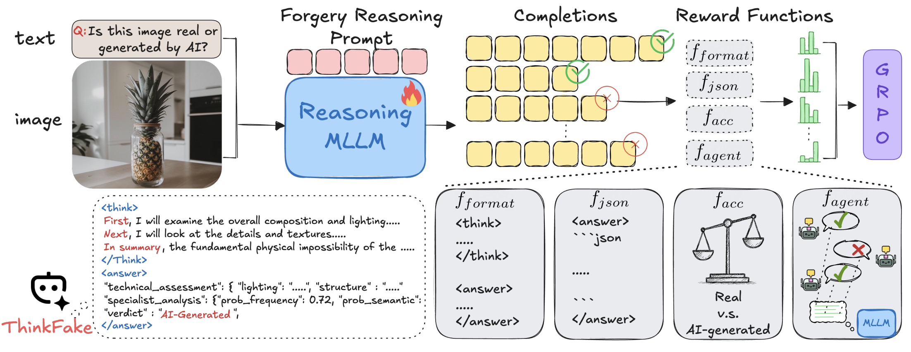
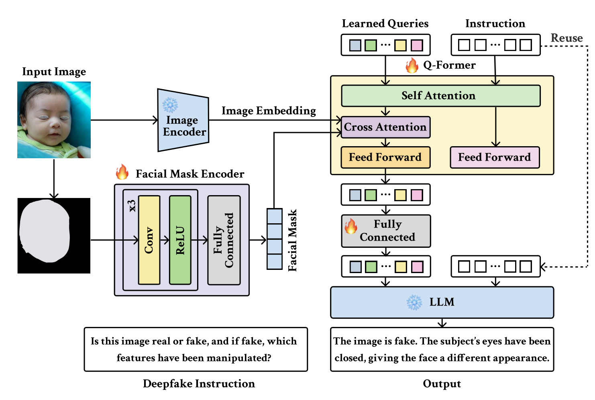
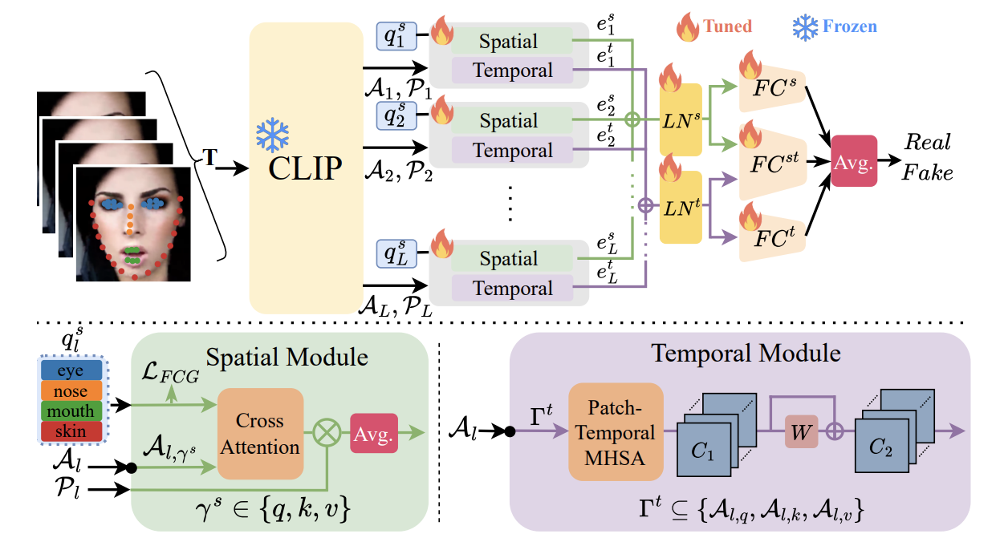
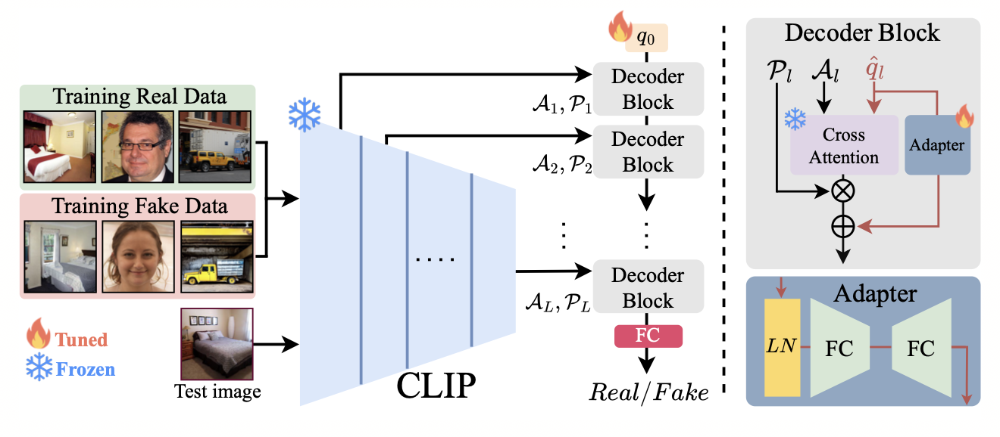
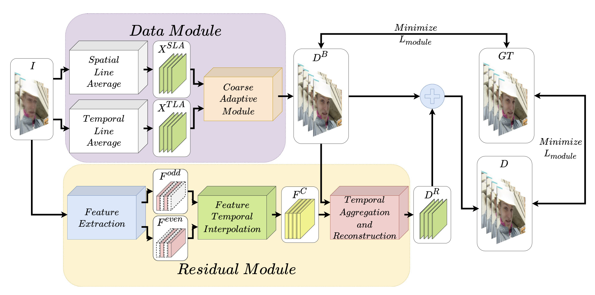
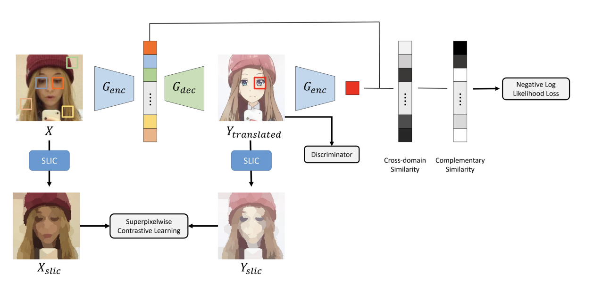
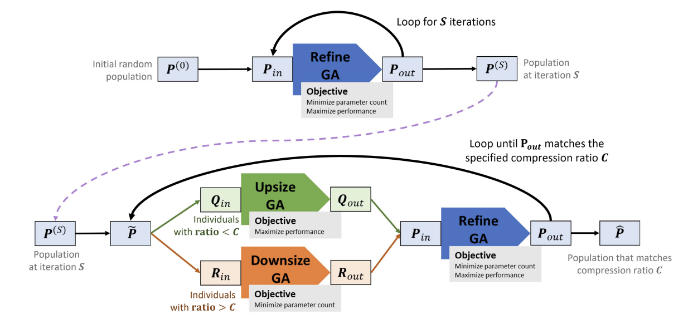

Selected publications
-

ThinkFake: Reasoning in Multimodal Large Language Models for AI-Generated Image Detection
Tai-Ming Huang, Wei-Tung Lin, Kai-Lung Hua, Wen-Huang Cheng, Junichi Yamagishi, Jun-Cheng Chen
Arxiv 2025
ExDF:Explainable Deepfake Detection with Vision-Language Model
Shu-Tzu Lo*, Tai-Ming Huang*, Yue-Hua Han, Kai-Lung Hua, Jun-Cheng Chen
ICIP 2025 (Spotlight)
Towards More General Video-based Deepfake Detection through Facial Feature Guided Adaptation for Foundation Model
Yue-Hua Han, Tai-Ming Huang, Kai-Lung Hua, Jun-Cheng Chen
CVPR 2025
Generalized Image-based Deepfake Detection through Foundation Model Adaptation
Tai-Ming Huang, Yue-Hua Han, Ernie Chu, Shu-Tzu Lo, Kai-Lung Hua, Jun-Cheng Chen
ICPR 2024
VDNet: video deinterlacing network based on coarse adaptive module and deformable recurrent residual network
Yin-Chen Yeh, Jilyan Dy, Tai-Ming Huang, Yung-Yao Chen, Kai-Lung Hua
Neural Computing and Applications 2022
A Data Hiding Scheme Based On Absolute Moment Block Truncation Coding and Lookup Table
Ting-Kai Yang, Shang-Fu Chen, Tai-Ming Huang, Julianne Tan, Jilyan Dy, Kai-Lung Hua
ICCE-TW 2022
Unpaired image-to-image translation using negative learning for noisy patches
Yu-Hsiang Hung, Julianne Tan, Tai-Ming Huang, Shang-Che Hsu, Yi-Ling Chen, Kai-Lung Hua
IEEE MultiMedia 2022
Adjustable model compression using multiple genetic algorithm
Jose Jaena Mari Ople, Tai-Ming Huang, Ming-Chih Chiu, Yi-Ling Chen, Kai-Lung Hua
IEEE Transactions on Multimedia 2021